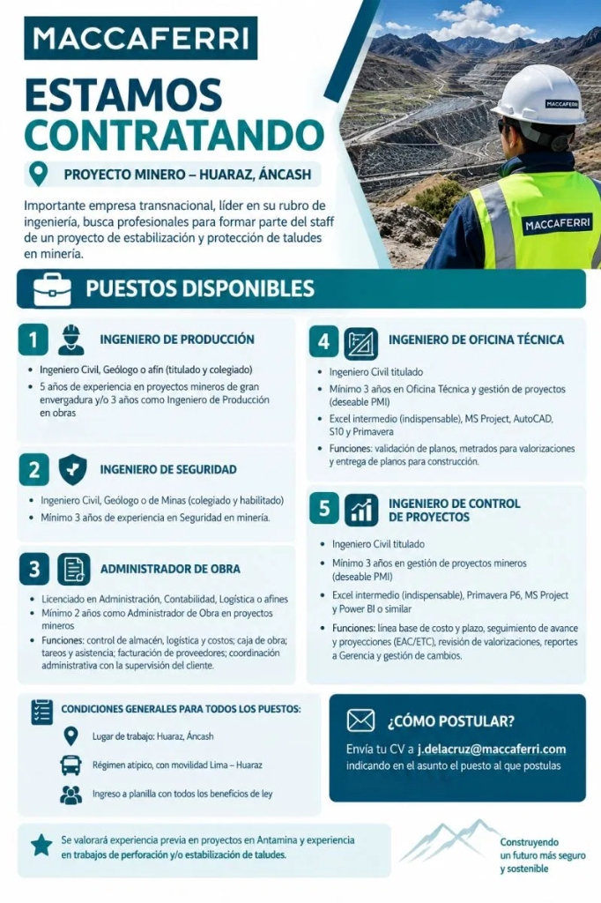
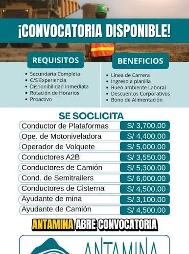

Perfil de Competencias por Actividad Primaria de la Cadena de Valor
Autoevaluación orientativa basada en dos convocatorias mineras oficiales: Maccaferri (Huaraz) y Antamina (San Marcos). Descubre tu nivel de alineamiento con los perfiles técnicos, operativos y de supervisión que demanda el sector.

Proyecto de estabilización y protección de taludes. Perfiles: Ing. de Producción, Ing. de Seguridad, Administrador de Obra, Oficina Técnica y Control de Proyectos.

Perfil operativo y transporte de carga pesada: Conductores A2B, Volquete, Cisterna, Semitrailers, Operadores de Maquinaria y Ayudantes de Mina.
Registro del Postulante
Ingresa tus datos para generar tu perfil individual. Esta evaluación consta de 45 preguntas distribuidas en las 5 actividades primarias de la cadena de valor de Porter.
Cargando reactivo de evaluación...
Resultado del Postulante
Evaluación técnica comparada con convocatorias oficiales de Maccaferri y Antamina.
Idoneidad por Convocatoria Oficial
Maccaferri (Huaraz)
Obras Mineras · Estabilización y TaludesPuestos de referencia: Ingeniero de Producción, Ingeniero de Seguridad, Administrador de Obra, Ingeniero de Oficina Técnica, Ingeniero de Control de Proyectos.
Antamina (San Marcos)
Gran Minería · Operaciones y Transporte PesadoPuestos de referencia: Conductores de Volquete, Cisterna, Semitrailers, Plataformas, Camión, A2B, Operadores de Maquinaria y Ayudantes de Mina.
Mapeo de Alineamiento por Actividad Primaria (Porter)
Visualización radial del porcentaje de cumplimiento en cada actividad frente a la línea de corte del sector minero (70%).
Desglose Detallado por Actividad Primaria y Competencia
Puntuación porcentual calculada según la fórmula: (Suma obtenida − Mínimo) / (Máximo − Mínimo) × 100, con inversión automática de reactivos negativos.
Panel del Administrador / Evaluador
Gestión de evaluaciones y consolidación de postulantes.
| Postulante | Fecha | Puntaje Global | Nivel | Consistencia | Acciones |
|---|---|---|---|---|---|
| No hay evaluaciones registradas en este equipo. | |||||